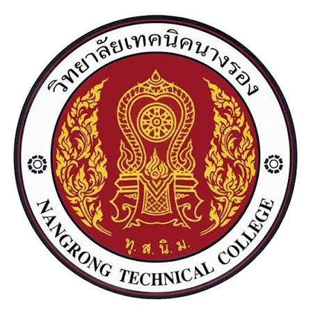
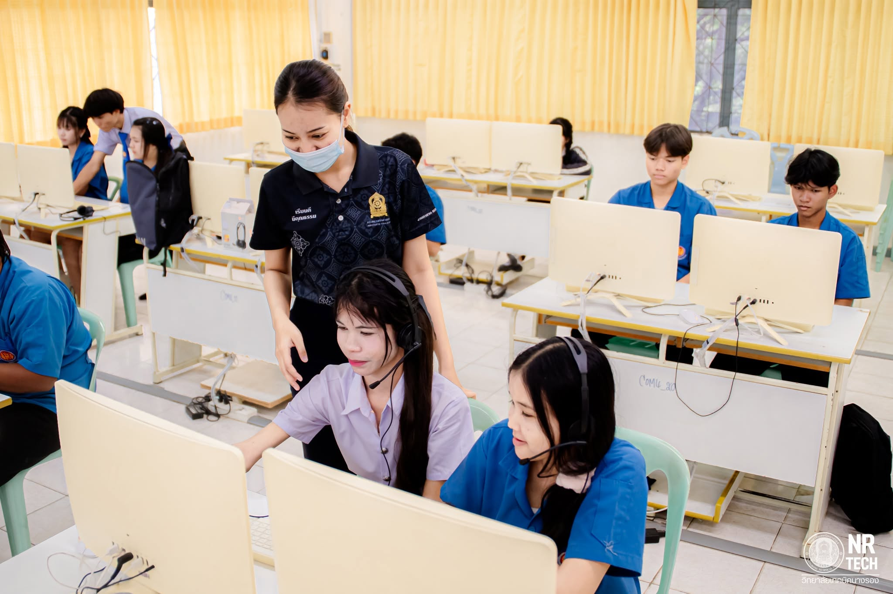
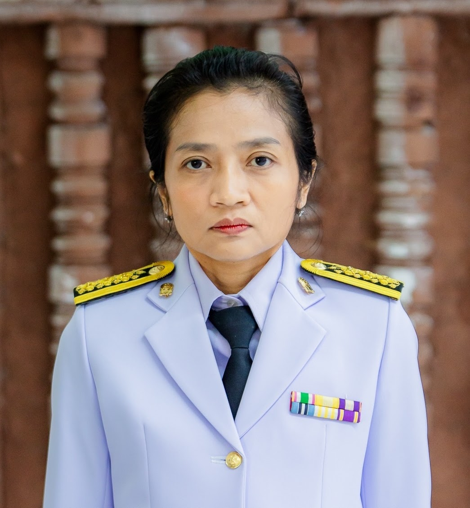
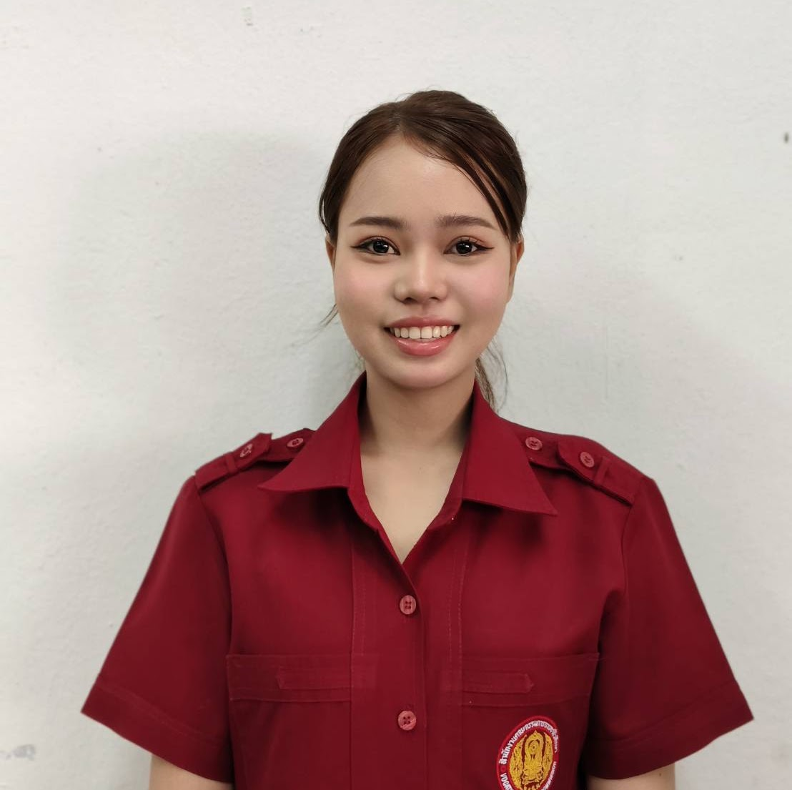

หัวหน้าแผนก
นายอุดม สติภา
ตำแหน่ง ครูชำนาญการ

วิทยาลัยเทคนิคนางรองNANGRONG TECHNICAL COLLEGECOMPUTER DEPARTMENT
พัฒนาความรู้ด้านคอมพิวเตอร์ เทคโนโลยีดิจิทัล และทักษะการทำงานจริง เพื่อเตรียมความพร้อม สำหรับการศึกษาต่อและการประกอบอาชีพ
แผนกวิชาคอมพิวเตอร์เป็นพื้นที่แห่งการเรียนรู้ ที่ผู้เรียนสามารถพัฒนาทักษะด้านเทคโนโลยี การใช้งานซอฟต์แวร์ การแก้ไขปัญหา และการประยุกต์ใช้ คอมพิวเตอร์ในงานจริง

คณะครูและบุคลากรผู้ดูแลการเรียนการสอนของแผนกวิชาคอมพิวเตอร์
ตำแหน่ง ครูชำนาญการ

ครูแผนกวิชาคอมพิวเตอร์

ครูแผนกวิชาคอมพิวเตอร์
ครูแผนกวิชาคอมพิวเตอร์

บุคลากรแผนกวิชาคอมพิวเตอร์
บุคลากรแผนกวิชาคอมพิวเตอร์

ครูพิเศษสอน แผนกวิชาคอมพิวเตอร์